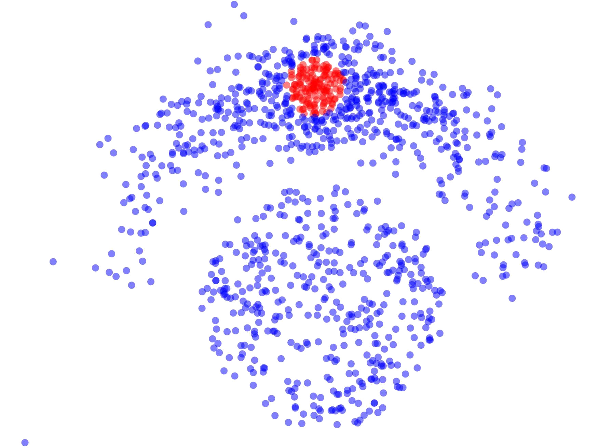
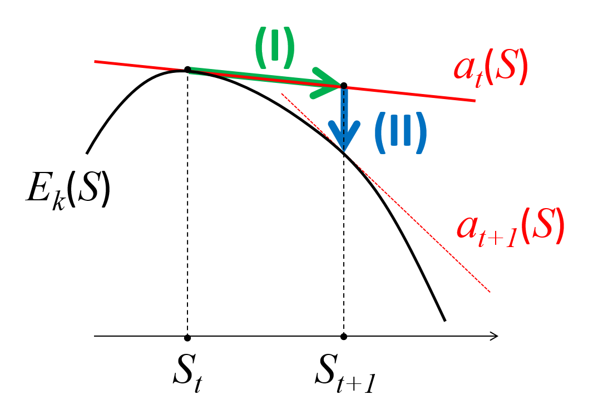
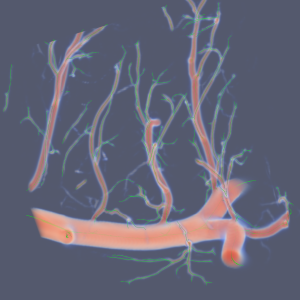
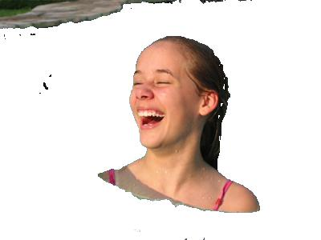
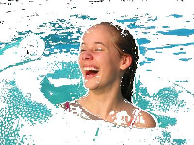

Дмитрий Марьин
I am a PhD candidate at the Department of Computer Science, University of Western Ontario. dmarin3 at uwo dot ca. My supervisor is Yuri Boykov.
My research is focused on designing general unsupervised and semi-supervised methods for accurate image segmentation and object delineation. In particular, I am focused on segmentation/detection of thin objects of different nature, e.g. roads, blood vessels, or contrast edges. The problem is formulated as cost function minimization. The concrete choice of the function depends on the properties of objects of interest. Many useful formulations are NP-hard, therefore efficient approximate optimization algorithms for such functions are desired.
IEEE Transactions on Pattern Analysis and Machine Intelligence. (accepted)
|  concave objective" class="pub-cover"> | Abstract. Clustering is widely used in data analysis where kernel methods are particularly popular due to their generality and discriminating power. However, kernel clustering has a practically significant bias to small dense clusters, e.g. empirically observed in (Shi&Malik,2000). Its causes have never been analyzed and understood theoretically, even though many attempts were made to improve the results. We provide conditions and formally prove this bias in kernel clustering. Previously, Breiman (1996) proved a bias to histogram mode isolation in discrete Gini criterion for decision tree learning. We found that kernel clustering reduces to a continuous generalization of Gini criterion for a common class of kernels where we prove a bias to density mode isolation and call it Breiman's bias. These theoretical findings suggest that a principled solution for the bias should directly address data density inhomogeneity. In particular, we show that density equalization can be implicitly achieved using either locally adaptive weights or a general class of Riemannian (geodesic) kernels. Our density equalization principle unifies many popular kernel clustering criteria including normalized cut, which we show has a bias to sparse subsets inversely related to Breiman's bias. Our synthetic and real data experiments illustrate these density biases and proposed solutions. We anticipate that theoretical understanding of kernel clustering limitations and their principled solutions will be important for a broad spectrum of data analysis applications across the disciplines. |
European Conference on Computer Vision (ECCV). Amsterdam, Netherlands, October 2016. Acceptance rate 1.8% (oral presentation)
|  concave objective" class="pub-cover"> | Abstract. We propose a new segmentation or clustering model that combines Markov Random Field (MRF) and Normalized Cut (NC) objectives. Both NC and MRF models are widely used in machine learning and computer vision, but they were not combined before due to significant differences in the corresponding optimization, e.g. spectral relaxation and combinatorial max-flow techniques. On the one hand, we show that many common applications for multi-label MRF segmentation energies can benefit from a high-order NC term, e.g. enforcing balanced clustering of arbitrary high-dimensional image features combining color, texture, location, depth, motion, etc. On the other hand, standard NC applications benefit from an inclusion of common pairwise or higher-order MRF constraints, e.g. edge alignment, bin-consistency, label cost, etc. To address NC+MRF energy, we propose two efficient multi-label combinatorial optimization techniques, spectral cut and kernel cut, using new unary bounds for different NC formulations. |
International Conference on Computer Vision (ICCV). Santiago, Chili, December 2015. Acceptance rate 19.6%
|  | Abstract. Many applications in vision require estimation of thin structures such as boundary edges, surfaces, roads, blood vessels, neurons, etc. Unlike most previous approaches, we simultaneously detect and delineate thin structures with sub-pixel localization and real-valued orientation estimation. This is an ill-posed problem that requires regularization. We propose an objective function combining detection likelihoods with a prior minimizing curvature of the center-lines or surfaces. Unlike simple block-coordinate descent, we develop a novel algorithm that is able to perform joint optimization of location and detection variables more effectively. Our lower bound optimization algorithm applies to quadratic or absolute curvature. The proposed early vision framework is sufficiently general and it can be used in many higher-level applications. We illustrate the advantage of our approach on a range of 2D and 3D examples. |
International Conference on Computer Vision (ICCV). Santiago, Chili, December 2015. Acceptance rate 19.6%
|

OURS

GrabCut
|
Abstract. The log-likelihood energy term in popular model-fitting segmentation methods, e.g. Zhu&Yuille, Chan-Vese, GrabCut, is presented as a generalized "probabilistic K-means" energy for color space clustering. This interpretation reveals some limitations, e.g. over-fitting. We propose an alternative approach to color clustering using kernel K-means energy with well-known properties such as non-linear separation and scalability to higher-dimensional feature spaces. Our bound formulation for kernel K-means allows to combine general pair-wise feature clustering methods with image grid regularization using graph cuts, similarly to standard color model fitting techniques for segmentation. Unlike histogram or GMM fitting, our approach is closely related to average association and normalized cut. But, in contrast to previous pairwise clustering algorithms, our approach can incorporate any standard geometric regularization in the image domain. We analyze extreme cases for kernel bandwidth (e.g. Gini bias) and demonstrate effectiveness of KNN-based adaptive bandwidth strategies. Our kernel K-means approach to segmentation benefits from higher-dimensional features where standard model fitting fails. |
{kind=link}
{kind=link}